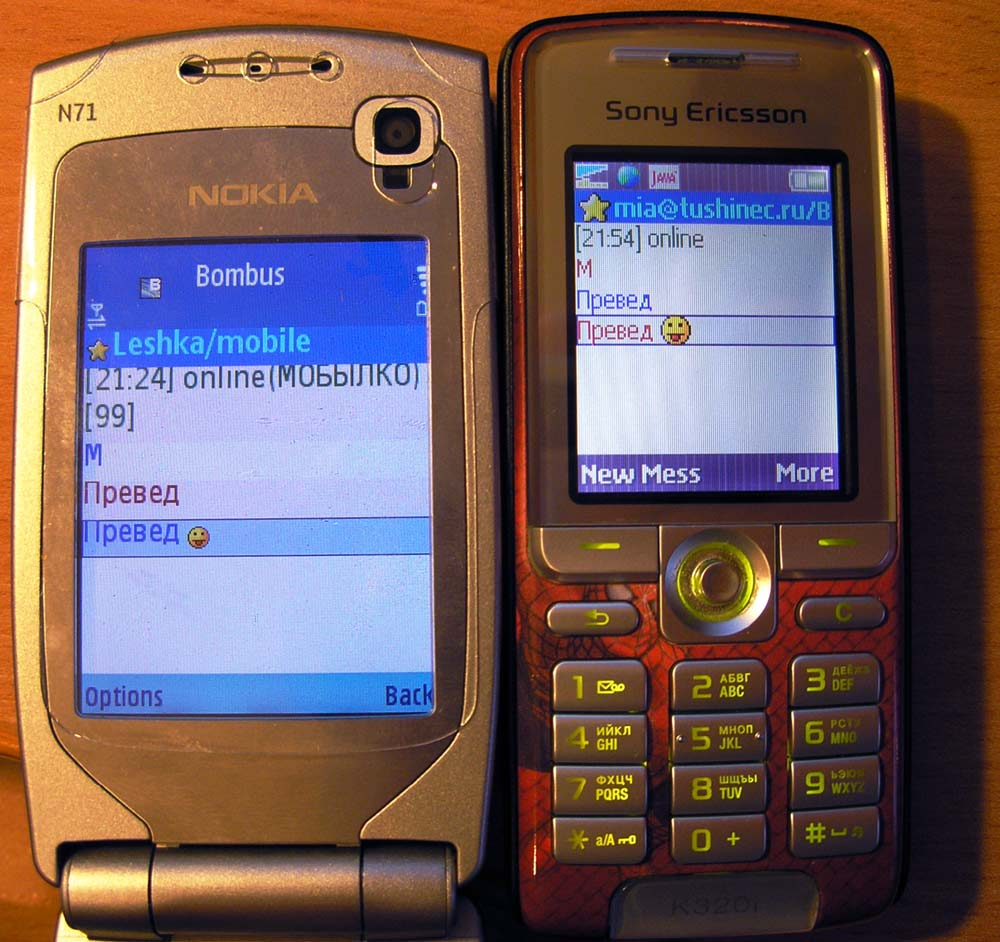

Dezentrale Messenger
The very last word in instant messaging
(Motto vom XMPP-Client Converations)
genofire - Chaos Computer Club Bremen e.V.
Agenda
- Dezentralität
- XMPP - Der Standard
- Software (Client und Server)
- Ist der Hoster gut
- Verschlüsselung
- Ausblick
- Alternativen
Dezentralität
Leider von den meisten Messenger verwendet
Dezentralität
Kommunikation über verschieden unabhängige zentrale Komponenten
Dezentralität
Geräte tauschen direkt miteinander Nachrichten aus (ohne eine zentrale Componente)
Dezentralität
Warum notwendig?
- Eröffnet ein Wettbewerb
- kleine und viele Angriffsziele
- vor Kriminelle
- vor Regierungen
- alle Überwachen
- blockieren / sperren (Zensur)
- Verringert Missbrauch durch Vertrauen
Dezentralität
Nachteile
- Komplexität steigt
- Gewollte Verringerung an Marktanteil
- Kann auch von kriminellen Elementen genutzt werden
- Nutzer müssen ggf. sich Ihre Adresse und Passwort merken
Extensible Messaging and Presence Protocol (XMPP)
XMPP
Adressierung
JID (Jabber ID) genannt:
node@domain/ressource
URI-Format: (falls MUC mit ?join am Ende)
xmpp:node@domain?join
XMPP
Message
<message from="geno@fireorbit.de"
to="#ccchb@irc.hackint.org" type="groupchat">
Hello World
</message>
Types:
- chat
- groupchat
- headline
- normal
- error
XMPP
Present: Aktuelle Live Informationen
<present to="#ccchb@irc.hackint.org" type="subscribe">
</present>
Types:
- error
- probe
- subscribe(d)
- unavailable
- unsubscribe(d)
XMPP
IQ (Instant Query): Abfragen mit Rückantworten
<iq to="irc.hackint.org" type="get">
<ping xmlns='urn:xmpp:ping'/>
</iq>
Types:
Software Clients
Empfehlungen:
- Conversations (Android)
- ChatSecure (iPhone)
- Gajim (Desktop)
- ConverseJS (WebClient)
- Viele mehr
Software Clients
Bombus - Client in J2ME für normale Telefone

Ist der Hoster gut
Tools zum Testen des Servers (Auswahl an Servern)
XEPs:
- PEP / PubSub
- MAM (für MUC)
- HTTP-Upload
- DNS-SRV for TLS (HTTPS)
XMPP
Verschlüsselung
- Off-The-Record
- OpenPGP
- OX
- OMEMO
Detailert: here
XMPP Verschlüsselung
- Geräte erstellt asynchrones Schlüsselpaar
- öffentlichen Schlüssel wird per PubSub auf dem Server hinterlegt
- Kontakte werden durch PEP / PubSub über neuen Schlüssel informiert
- Dieser muss diesen öffentlichen Schlüssel laden
Ausblick
- Transports
- Biboumi: IRC
- Spectrum2: e.g AIM, ICQ, MSN, Yahoo, Telegram, Twitter, “WhatsApp”
- PubSub
- Blogging / Posting (siehe Movim)
- Commands
XEP-Liste letzter Eintrag: XEP-0410: MUC Self-Ping (Schrödinger’s Chat)
Alternativen zu XMPP
Peer-to-Peer
Alternativen zu XMPP
Federation
- Matrix (Riot):
- Änderungsvorschläge am Protokoll werden durch das Unternehmen entschieden
- (mir sonst keine Weiteren bekannt …)
Ende
Hackerethik
3. Mißtraue Autoritäten – fördere Dezentralisierung.